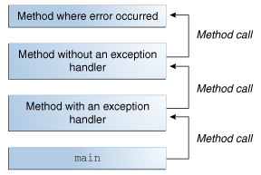
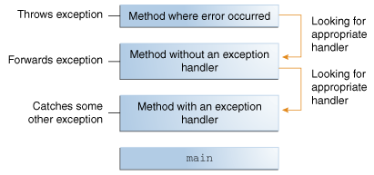

[Java] Exception 알아보기
서론
CS 스터디에서 6월 19일 발표한 Exception에 대해 정리한 문서를 블로그에 공유하고자 한다.
Java에서, Exception이란?
Exception 이란, Java 프로그램 실행 도중 발생하는 이벤트 로, 정상적인 명령 흐름을 방해합니다.
예외 처리 흐름
어떠한 메서드 내에서 오류가 발생하면, 메서드는 예외 객체(Exception Object)를 생성해 런타임 시스템에게 넘깁니다.
이때, 이처럼 예외 객체를 생성해 런타임 시스템에 전달하는 것을 예외를 던진다(Throwing an Exception)라고 합니다.
예외 객체(Exception Object): 발생한 오류의 유형, 발생 당시 프로그램의 상태와 같은오류에 대한 정보를 포함하는 객체입니다.
메서드가 예외를 던지게 되면, 런타임 시스템은 이를 처리해줄 수 있는 무언가를 찾으려 합니다. 여기서 말하는 ‘무언가’는, 오류가 발생한 메서드에 도달하기 위해 호출된 메서드들이 정렬된 리스트를 이루고 있는데 이를 호출 스택(Call Stack)이라고 합니다.

런타임 시스템은 호출 스택에서 현재 발생한 예외를 처리할 수 있는 코드 블록이 포함되어있는 메서드를 찾습니다. 이러한 코드 블록을 예외 처리기(Exception Handler)라고 합니다.
이러한 탐색은 오류가 발생한 메서드부터 메서드가 호출된 역순으로 호출 스택을 훑으며 진행됩니다.
이때 적절한 처리기 를 찾게되면 런타임 시스템은 예외를 처리기에 전달하게 되고, 예외 처리기는 예외 객체의 유형이 처리기가 처리할 수 있는 유형과 일치하는 경우 적절한 처리기 로 간주됩니다.
만약 런타임 시스템이 적절한 예외 처리기를 찾지 못한채, 호출 스택의 모든 메서드들을 탐색했다면 런타임 시스템(과 프로그램)이 종료되게 됩니다.

Exception의 종류
Exception은 크게 Checked Exception, Unchecked Exception, Error 세가지로 구분됩니다.
Error, Runtime Exception 및 이들의 하위 클래스들을 제외한 모든 Exception은 Checked Exception 입니다.
Checked Exception
Checked Exception이란, 잘 작성된 Java 애플리케이션이라면 예상할 수 있어야 하고 복구해야 하는 예외를 말합니다.
예를 들어, 사용자에게 파일 이름을 입력 받고 이를 java.io.FileReader를 통해서 여는 애플리케이션이 있다고 가정합시다. 이때, 사용자가 존재하는 파일의 이름을 입력할 수도 있지만, 존재하지 않는 파일의 이름을 입력할 수도 있습니다. 이럴 경우 java.io.FileNotFoundException이 발생하게 됩니다.
이때 잘 작성된 애플리케이션이라면, 위 처럼 충분히 예상 가능한 예외 케이스에 대해 포착하고, 사용자의 실수를 알린 뒤 파일 이름을 다시 입력해달라는 메시지를 표시할 것입니다.
Checked Exception의 경우 try-catch 절을 이용해 예외를 처리 하거나, throws 절을 이용해 예외를 던져야 합니다. 그렇지 않을 경우 코드가 컴파일되지 않습니다.
Unchecked Exception
Runtime Exception
Runtime Exception이란, 애플리케이션 내부에 존재하지만 일반적으로 예상하거나 복구할 수 없는 예외를 말합니다.
일반적으로 논리 오류나 부적절한 API 사용과 같은 프로그래밍 버그를 말합니다.
Runtime Exception의 경우 Checked Exception과 달리, catch 또는 throws절에 의해 처리되거나 던져져지지 않아도 코드가 정상적으로 컴파일 됩니다.
Error
Error란, 애플리케이션 외부에서 발생하는 예외를 말하며, 애플리케이션이 일반적으로 예상하거나 복구할 수 없습니다.
예를 들어, 사용자가 입력한 파일을 정상적으로 열었지만, 하드웨어 또는 OS가 오작동해 파일을 읽을 수 없는 경우 java.io.IOError가 발생하게 됩니다.
이때 애플리케이션은 이를 포착하고 사용자에게 이를 알릴 수도 있지만, stack trace를 출력하고 프로그램을 종료하는 것 역시 합리적일 수 있습니다.
Error 역시 Checked Exception과 달리, catch 또는 throws절에 의해 처리되거나 던져져지지 않아도 코드가 정상적으로 컴파일 됩니다.
Exception 방식의 장점
오류 처리 코드와 메인 로직 코드의 분리
기존의 프로그래밍 방식에서는 메인 로직 코드와 오류 감지 및 처리 코드가 혼재해있어 코드의 가독성과 유지보수성이 떨어집니다.
반면 Exception 방식을 채용할 경우, 오류 처리와 관련된 세부 사항을 메인 로직 코드와 분리할 수 있습니다.
예시
기존의 방식이라면, 아래 코드처럼 메인 로직 중간중간에 오류를 감지하고 처리하는 코드가 존재하게 됩니다.
errorCodeType readFile {
initialize errorCode = 0;
open the file;
if (theFileIsOpen) {
determine the length of the file;
if (gotTheFileLength) {
allocate that much memory;
if (gotEnoughMemory) {
read the file into memory;
if (readFailed) {
errorCode = -1;
}
} else {
errorCode = -2;
}
} else {
errorCode = -3;
}
close the file;
if (theFileDidntClose && errorCode == 0) {
errorCode = -4;
} else {
errorCode = errorCode and -4;
}
} else {
errorCode = -5;
}
return errorCode;
}
반면 Exception 방식을 채용할 경우, 아래처럼 오류 감지 및 처리 코드가 정리되어 가독성이 높고 유지보수성이 높은 코드를 작성할 수 있게 됩니다.
readFile {
try {
open the file;
determine its size;
allocate that much memory;
read the file into memory;
close the file;
} catch (fileOpenFailed) {
doSomething;
} catch (sizeDeterminationFailed) {
doSomething;
} catch (memoryAllocationFailed) {
doSomething;
} catch (readFailed) {
doSomething;
} catch (fileCloseFailed) {
doSomething;
}
}
오류를 호출 스택으로 전파할 수 있음
오류를 호출 스택에 있는 다른 메서드로 전파할 수 있어, 오류에 대해 관심이 있는 메서드만 오류 감지에 대해 신경쓰도록 코드를 작성할 수 있습니다.
따라서, 오류 처리에 관심이 없는 메서드는 그저 호출 스택 위로 예외를 던지기만하면 됩니다.
예시
예시로, method1 -> method2 -> method3 -> readFile 순서대로 함수를 호출한다고 가정하겠습니다. 의사 코드로 이를 표현하면 다음과 같습니다.
method1 {
call method2;
}
method2 {
call method3;
}
method3 {
call readFile;
}
또한, 오류 처리에 대해서는 오직 method1만 관심이 있다고 가정하겠습니다.
기존의 오류 알림 기법이었다면 다음 의사코드처럼 return 문을 통해 발생한 오류를 전파했을 것입니다.
method1 {
errorCodeType error;
error = call method2;
if (error)
doErrorProcessing;
else
proceed;
}
errorCodeType method2 {
errorCodeType error;
error = call method3;
if (error)
// 에러가 발생한 경우, 호출 스택 상위의 메서드(method1)로 error 반환
return error;
else
proceed;
}
errorCodeType method3 {
errorCodeType error;
error = call readFile;
if (error)
// 에러가 발생한 경우, 호출 스택 상위의 메서드(method2)로 error 반환
return error;
else
proceed;
}
하지만 Exception 방식의 경우 method2, 3에서 발생한 예외를 단순히 던져주기만 하면 됩니다.
method1 {
try {
call method2;
} catch (exception e) {
doErrorProcessing;
}
}
method2 throws exception {
call method3;
}
method3 throws exception {
call readFile;
}
오류 타입의 그룹화 및 구분
Java 프로그램에서 던져지는 모든 예외는 객체이기 때문에, 클래스 계층 구조상 예외를 그룹화하거나 분류할 수 있게 됩니다.
- 다만, 대부분의 상황에서는
예외 처리기가 가능한 구체적인 예외를 처리하는 것이 좋습니다.- 최선의 복구 전략을 결정하는데 있어 어떤 유형의 예외가 발생했는지 파악하는 것이 중요하기 때문입니다.
예시
예시로 Java의 I/O 작업 관련 예외의 부모인 IOException과 그 하위 클래스인 FileNotFoundException을 들어보겠습니다.
만약 파일을 찾을 수 없다는 예외만 처리하고 싶다면 catch문에서 FileNotFoundException만 명시하면 됩니다. (FileNotFoundException은 하위 클래스가 없습니다.)
catch (FileNotFoundException e) {
...
}
반면, I/O 작업과 관련된 예외 전체를 묶어 처리하고 싶다면 catch문에서 IOException을 명시하면 됩니다.
catch (IOException e) {
...
}
예외처리를 하는 세가지 방법
흔히 Java에서 예외를 처리하는 방법은 try-catch문을 이용한 예외복구, throws절을 이용한 예외회피, throw문을 이용한 예외전환 세가지 방법이 있다고 알려져 있습니다.
try-catch
try {
} catch (ExceptionType name) {
} catch (ExceptionType2 name) {
}
try-catch, 추가로 finally 문을 사용해 현재 메서드 내에서 예외를 처리하는 방법입니다.
try
먼저 예외가 발생할 수 있는 코드를 try 블록으로 묶고, try 블록 내부에서 발생 가능한 예외를 처리하는 예외 처리기가 존재하는 catch 블록을 연결하는 형태로 구현합니다.
이때, 예외가 발생할 수 있는 각 코드를 각각의 try-catch 문으로 묶을 수도 있고, 모든 코드를 하나의 try-catch 블록으로 묶어 처리할 수도 있습니다.
catch
각 catch 블록은 인자로 받는 예외 타입을 처리하는 예외 처리기로, 이때 예외 타입은 Throwable클래스의 하위 클래스여야 합니다.
런타임 시스템은 예외 처리기가 호출 스택에서 던져진 예외 타입과 일치하는 첫 번째 핸들러일 때, 예외 처리기를 호출합니다.
이때 예외 처리기 내부에서는 단순히 오류 메시지를 출력하거나 프로그램을 중지하는 것 외에도 다양한 작업을 수행할 수 있습니다.
오류를 복구하거나, 사용자에게 결정을 내리도록 메시지를 표시하거나, 상위 수준의 예외 처리기로 오류를 전파할 수도 있습니다.
Union catch 절
추가로, Java 7 이상에서는 | 키워드를 통해 하나의 catch 블록이 둘 이상의 예외 타입을 처리할 수 있습니다.
catch ( IOException | SQLException ex) {
logger.log(ex);
throw ex;
}
참고로 catch 블록이 둘 이상의 예외 타입을 처리하는 경우, 해당 catch절의 매개변수는 암시적으로 final로 여겨집니다. 즉, catch 블록 내에서 해당 매개변수에 어떠한 값도 할당할 수 없습니다.
finally
...
finally {
if (out != null) {
System.out.println("Closing PrintWriter");
out.close();
} else {
System.out.println("PrintWriter not open");
}
if (f != null) {
System.out.println("Closing FileWriter");
f.close();
}
}
finally블록은 try 블록을 탈출할 때, 항상 실행되는 블록입니다.
따라서 예상치 못한 예외가 발생해도, 항상 실행됩니다. 이러한 특징 때문에 프로그래머가 실수로 return, continue,break 블록을 통해 클린업 코드가 무시되는 것을 방지할 때도 유용합니다.
클린업 코드: 사용한 자원 등을 정리하는 코드
try-with-resources
try (FileReader fr = new FileReader(path);
BufferedReader br = new BufferedReader(fr)) {
return br.readLine();
}
try-with-resources 문이란, 하나 이상의 자원을 선언하는 try 문을 말합니다.
이때 자원은, 프로그램이 완료된 후 닫아야(close)하는 객체를 말합니다.
try-with-resources 문에는 java.lang.AutoCloseable을 구현하는 모든 객체(java.io.Closeable을 구현하는 객체 포함)를 자원으로 사용할 수 있습니다.
- 참고로
Closeable인터페이스는AutoCloseable인터페이스를 상속합니다. - 추가로,
AutoCloseable의close()는Exception타입의 예외를 던지지만,Closeable인터페이스는IOException타입의 예외를 던집니다.
선언된 자원들은 try문이 정상적으로 완료 되었는지 또는 예외가 발생했는지에 관계 없이 항상 닫히게 됩니다.
try-with-resources문은 finally 블록을 통해서 여러 자원을 닫을 때 예외가 발생할 경우, 아직 닫지 못한 자원이 메모리 누수를 발생시킬 수 있는 것과 달리, 항상 자원을 닫음을 보장하기 때문에 try-with-resources문을 사용하는 것이 권장됩니다.
추가로, try 블록과 try-with-resources 문 모두에서 예외가 발생할 경우, try 블록에서 발생한 예외만 던지고, try-with-resources 문에서 발생한 예외는 억제됩니다.
- 이렇게
억제된 예외는try블록에서 발생한 예외의Throwable.getSuppressed()메서드를 통해 찾을 수 있습니다.
또한 자원의 close 메서드는 생성 순서의 반대 순서 로 호출됩니다.
그리고 try-with-resources문 역시 catch 블록과 finally 블록을 연결할 수 있는데, 이들은 모두 try문에서 선언된 자원이 닫힌 후 실행되게 됩니다.
throws
public void writeList() throws IOException, IndexOutOfBoundsException { ... }
위처럼 코드 내에서 발생할 수 있는 예외를 해당 코드에서 직접 처리하도록 하는게 적절할 수도 있지만, 호출 스택의 상위 메서드가 예외를 처리하도록 하는 것이 더 좋을 수도 있습니다.
이때 throws절을 사용해 예외를 회피할 수 있습니다.
throws절에는 해당 메서드 내에서 발생할 수 있는 예외를 하나 이상 기입할 수 있습니다. 이때, 둘 이상의 예외는 쉼표를 통해 구분해 기입합니다.
참고로 Unchecked Exception의 경우 Checked Exception과 달리 throws절에 꼭 포함시키지 않아도 됩니다.
throw
try {
...
} catch (IOException e) {
throw new SampleException("Other IOException", e);
}
어느 곳에서 하나의 예외가 발생한 경우, 애플리케이션에서 종종 다른 예외를 던저 이에 응답하는 경우가 있습니다.
즉 하나의 예외가 다른 예외를 유발하는 것인데, 이를 연쇄 예외(Chained Exception)라고 합니다.
이는 주로 Throwable의 생성자인 Throwable(String, Throwable), Throwable(Throwable)를 활용해 이뤄집니다.
또한 Throwable의 getCause() 메서드를 통해 현재 예외를 발생시킨 예외를 얻거나, initCause(Throwable) 메서드를 통해 현재 예외의 원인을 설정할 수도 있습니다.
예외처리가 성능에 끼치는 영향은 어느정도일까?
| Benchmark | Mode | Cnt | Score | Error | Units |
|---|---|---|---|---|---|
| ExceptionBenchmark.createExceptionWithoutThrowingIt | avgt | 10 | 16.605 | ± 0.988 | ms/op |
| ExceptionBenchmark.doNotThrowException | avgt | 10 | 0.047 | ± 0.006 | ms/op |
| ExceptionBenchmark.throwAndCatchException | avgt | 10 | 16.449 | ± 0.304 | ms/op |
| ExceptionBenchmark.throwExceptionWithoutAddingStackTrace | avgt | 10 | 1.185 | ± 4.991 | ms/op |
| ExceptionBenchmark.throwExceptionAndUnwindStackTrace | avgt | 10 | 326.560 | ± 0.015 | ms/op |
Performance Effects of Exceptions in Java | Baeldung의 벤치마크 결과를 보면, 예외를 발생시키고 이를 try-catch 블록으로 처리하는 메서드는 예외가 발생하지 않는 메서드에 비해 수백 배 느리게 실행됩니다. 심지어 단지 예외를 생성하기만 하는 메서드 역시 수 백배 느립니다.
하지만 예외를 발생시키고, 이를 try-catch 블록으로 처리하는 메서드에서 Stack Trace에 해당 예외를 추가하지 않도록 했더니 시간을 수 백배 단축할 수 있었습니다.
게다가 발생한 예외의 getStackTrace() 메서드를 호출해 StackTrace를 Unwinding, 즉 현재 메서드 부터 호출 스택의 메인 메서드 까지 되감아 올라갈 경우 실행 시간이 스무 배 증가했습니다.
이를 종합해 보면, Stack Trace에 예외를 추가하는데 상당한 성능 저하가 발생함을 알 수 있습니다.
특히, Stack Trace를 Unwinding하는 경우 성능 저하는 더욱 심해집니다.
따라서 예외 처리에 따른 성능 저하를 방지하기 위해서는, 최대한 적재적소에만 예외 처리문을 사용하는 것이 좋습니다. 즉, 예외 처리문을 가능한 적게 사용하는 것이 좋습니다.
참고
- What Is an Exception? (The Java™ Tutorials > Essential Java Classes > Exceptions) (oracle.com)
- The try Block (The Java™ Tutorials > Essential Java Classes > Exceptions) (oracle.com)
- The catch Blocks (The Java™ Tutorials > Essential Java Classes > Exceptions) (oracle.com)
- The finally Block (The Java™ Tutorials > Essential Java Classes > Exceptions) (oracle.com)
- The Catch or Specify Requirement (The Java™ Tutorials > Essential Java Classes > Exceptions) (oracle.com)
- Chained Exceptions (The Java™ Tutorials > Essential Java Classes > Exceptions) (oracle.com)
- Advantages of Exceptions (The Java™ Tutorials > Essential Java Classes > Exceptions) (oracle.com)
- Exception (Java Platform SE 8 ) (oracle.com)
- Throwable (Java Platform SE 8 ) (oracle.com)